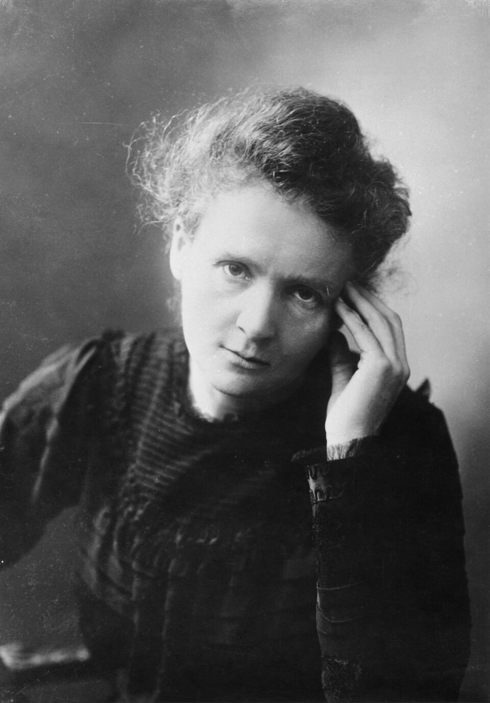
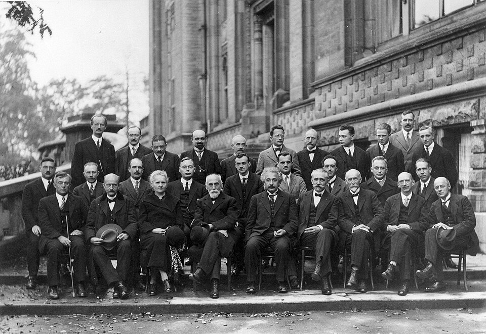

1867
Born as Maria Skłodowska in Warsaw, Poland.
The pioneering scientist whose discoveries changed the world.
A physicist and chemist whose groundbreaking discoveries in radioactivity transformed science and medicine. As the first person to win two Nobel Prizes, Marie Curie continues to inspire generations through her dedication, perseverance, and passion for knowledge.
Learn More

Marie Curie working in her laboratory.
Marie Curie, born as Maria Skłodowska in Warsaw, Poland, in 1867, grew up in a family that valued education. Despite financial hardships and limited opportunities for women, she remained determined to learn and excelled in her studies from an early age.
Unable to attend a university in Poland, Marie continued her education through the secret Flying University while working to support herself and her family. She later moved to Paris, where she studied physics and mathematics at the Sorbonne and began her scientific career.
Alongside her husband, Pierre Curie, she discovered the elements polonium and radium through pioneering research on radioactivity. Her achievements earned her two Nobel Prizes, making her the first woman to receive the award and the first person to win it in two different scientific fields.
Marie Curie's work transformed science and medicine, especially in the use of radiation for treating diseases. Her determination, curiosity, and dedication continue to inspire scientists and students around the world.
Born as Maria Skłodowska in Warsaw, Poland.
Moved to Paris to study physics and mathematics at the Sorbonne.
Discovered the elements polonium and radium with Pierre Curie.
Awarded the Nobel Prize in Physics.
Received the Nobel Prize in Chemistry.
Passed away, leaving a lasting impact on science and medicine.

Marie Curie became the first person to win Nobel Prizes in two different scientific fields.
Her research transformed the understanding of radioactivity and laid the foundation for modern nuclear science.
Her discoveries contributed to the development of radiation therapy, helping treat diseases such as cancer.
Her determination continues to inspire scientists, students, and especially women pursuing careers in STEM.
“Nothing in life is to be feared, it is only to be understood.”